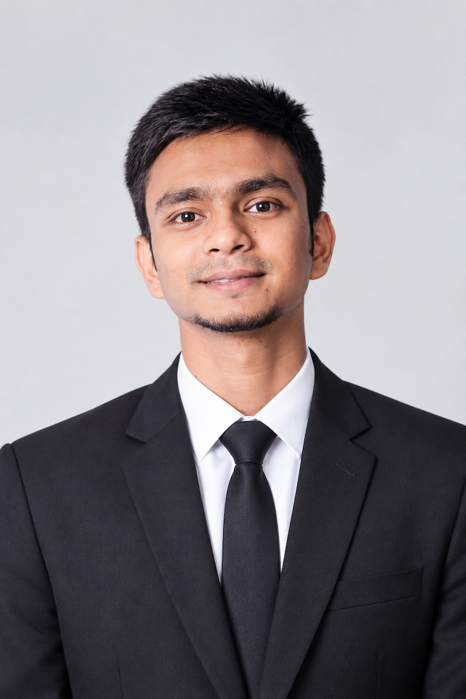

Hi, I'm Md. Omur Faruk
CSE graduate from ULAB with a focus on Computer Networking and Data Science. I keep networks running at an ISP by day, and build AI/ML, NLP and IoT projects the rest of the time.

About me
Where networking meets AI.
Who I am
I completed my BSc in Computer Science and Engineering at the University of Liberal Arts Bangladesh (2022 to 2026), with majors in Data Science and Computer Networking. I enjoy analytical problem-solving, research, and turning ideas into working systems.
What I'm doing now
Working as a NOC Engineer intern at Duronto Internet, an internet service provider, where I get hands-on exposure to real network operations and monitoring.
What I'm looking for
An entry-level role where I can grow in networking, data and AI, contribute to team goals, and keep learning every day.
Skills
Tools and strengths I work with.
Technical
AI, Data & IoT
Soft skills
Experience
Where I've worked and researched.
NOC Engineer (Intern)
- Working in the Network Operations Center of an internet service provider.
- Learning day-to-day network monitoring, troubleshooting and support in a live environment.
Student Researcher
- Worked on IoT, automation, smart systems and applied computing projects.
- Cattle heat and temperature monitoring using technology-based approaches.
- Smart Door System with punch-based attendance, automatic user records and voice-command responses.
- Literature reviews, data collection, technical analysis, testing and documentation with the team.
BSc in Computer Science and Engineering
- Majors: Data Science, Computer Networking.
Projects
Things I've built. Tap a filter to explore.
Bengali AI Chatbot for NCTB Textbooks
Capstone project (CSE 4098) answering questions from Class 8 Science and BGS textbooks.
- Hybrid retrieval with FAISS, BM25 and RRF for textbook-grounded answers.
- Scanned-textbook pipeline with Tesseract OCR and DocLayout-YOLO for text, diagrams and tables.
- Fine-tuned Gemma 3 4B-IT with QLoRA and deployed it locally with Ollama.
- Multi-stage prompt pipeline for query classification, intent detection, expansion and response.
Justice Link BD
A digital e-governance and AI-based public safety platform connecting citizens and law enforcement.
- AI fake-report filtering using CNN-based sentiment analysis.
- Anonymous, encrypted reporting for secure submissions.
- Emergency SOS module with geo-fencing alerts within a 500-meter radius.
Smart Greenhouse Monitoring & Control
An IoT system that monitors and controls a greenhouse environment.
- DHT22, soil moisture and LDR sensors for data collection.
- ESP32 and relay modules controlling pumps, fans, lighting and humidification.
- Automated control based on environmental conditions.
Smart Door System
Built with Tiny Neurons Research Group.
- Punch-based attendance with automatic storage of user information.
- Voice-command feature giving automated spoken responses after attendance.
Research publications
Work in AI and personalization.
AdaLLM: A Subject-Adaptive RAG Framework for Question Answering on NCTB Class-8 Science & BGS
AcceptedA subject-adaptive RAG framework for curriculum-aligned question answering over NCTB Grade-8 content.
Reinforcement Learning-Based Per-Company Weight Personalization for Intelligent Talent Matching
Under reviewRL-driven personalization of matching weights per company to improve candidate–job fit in AI talent matching.
Let's connect
I'm open to entry-level opportunities in networking, data and AI. Send me a message, or have a look at my code on GitHub.